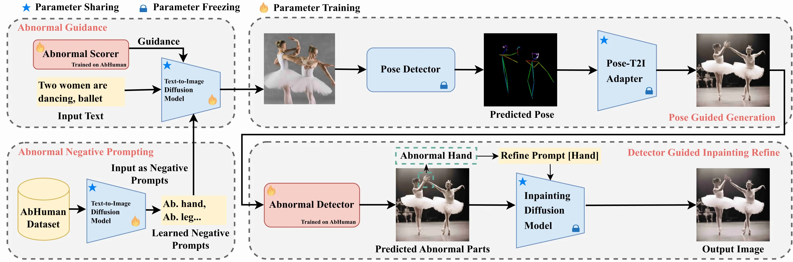
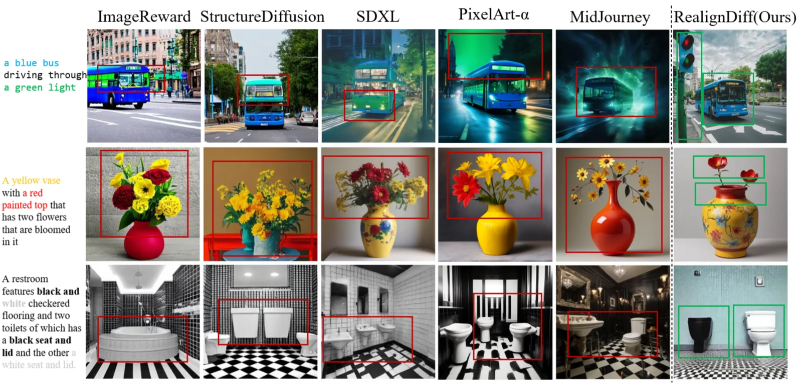
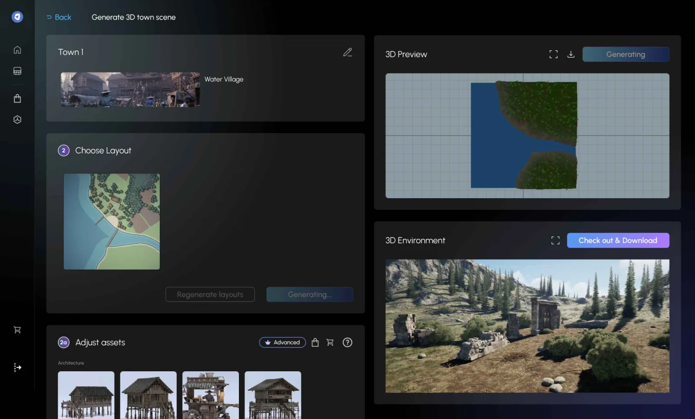

Guian Fang
I am a Ph.D. student at Show Lab, National University of Singapore, advised by Prof. Mike Zheng Shou.
Previously, I received my B.Eng. in Intelligent Science and Technology at the School of Intelligent Systems Engineering, Sun Yat-sen University, advised by Xiaodan Liang (梁小丹), co-supervised by Shengcai Liao.
My research centers on generative video models and world models for long-form visual generation, with recent work on video diffusion distillation and embodied intelligence.
Beyond research, I build agentic visual-generation pipelines and runtime infrastructure for coding agents, and I am open to collaboration.
News
- 2026.06 Two papers — AnyFlow and PAI-Studio — accepted to ECCV 2026.
- 2026.05 Open-sourced AnyFlow — any-step video diffusion via flow map distillation.
- 2026.05 Released Claw Orchestrator — a unified runtime for Claude Code, Codex and other coding CLIs.
- 2026.03 Launched PAI at Utopai Studios — long-form video generation for cinematic storytelling.
- 2025.07 RealignDiff accepted to IEEE TNNLS — coarse-to-fine semantic re-alignment for diffusion.
- 2025.06 Launched MikoAI — an ACG (anime / comic / manga) creation tool, powered by FramePrompt.
- 2024.08 Started Ph.D. at Show Lab, NUS, advised by Prof. Mike Zheng Shou.
- 2024.07 HumanRefiner accepted to ECCV 2024.
- 2024.06 Co-organized LOVEU workshop at CVPR 2024 — long-form video understanding & AI copilots.
- 2024.05 ChartThinker presented at LREC-COLING 2024 in Torino.
- 2023.07 Released LLaMA2-Accessory with OpenGVLab, Shanghai AI Lab — open-source LLM toolkit.
Publications
My research focuses on Generative Models for Vision — particularly long-form video generation, video diffusion, and Video World Models for video understanding and generation — as well as Embodied Intelligence. Representative works are highlighted. * denotes equal contribution.


Products & Open Source
Deployed products and open-source systems I've led or co-built — productized research rather than peer-reviewed papers.



Honors & Awards
Scholarships
- National Scholarship (2023)
- SYSU Outstanding Student Scholarship — 1st Class (2023)
- Li Xuerou Foundation Scholarship (2023)
- Huawei Intelligent Foundation Scholarship (2022)
- National Encouragement Scholarship (2022)
Competitions
- 1st Place, National College Computer Ability Challenge (2023)
- 2nd Place, Asia and Pacific Mathematical Contest in Modeling (2022)
- Silver Medal, China Collegiate Algorithm Design & Programming Challenge Contest (2022)
- 2nd Place, Social Computing Innovation Competition (2022)
Activities & Services
Conference Reviewer
- CV: ECCV, CVPR, ICCV
- ML: NeurIPS, ICLR, ICML
- AI: AAAI, AISTATS
- NLP: ACL Rolling Review (ACL, EMNLP, NAACL, EACL)
Workshop Organizer
- LOVEU Workshop @ CVPR 2024: Long-form Video Understanding Towards Multimodal AI Assistant and Copilot
Teaching Assistant
- EE3703: Machine Learning with Applications
- EE4309: Robot Perception
- EE5106: Advanced Robotics
Acknowledgements
Grateful to the mentors and teams I've worked with along the way.